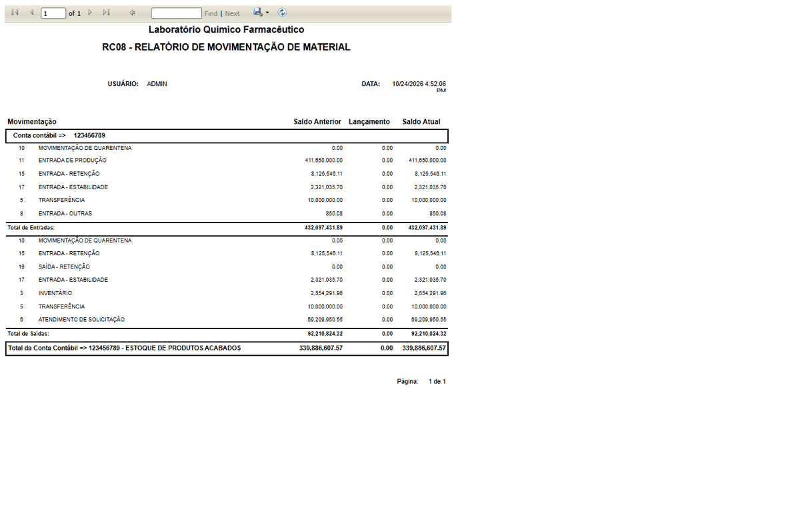
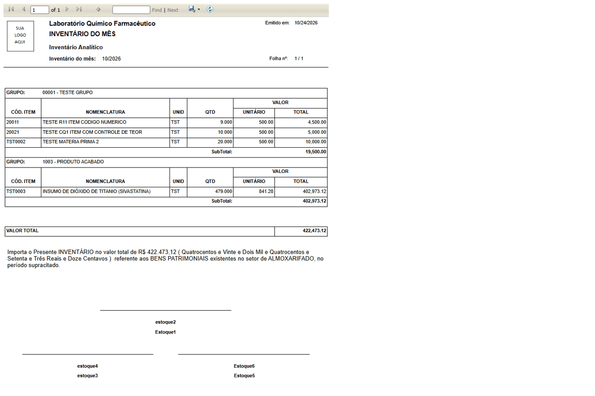

DV-EST-128 · RC08: o relatório de movimentação de material mostra valores de centenas de milhões e a coluna Lançamento zerada, com conta fixa
Com a data de referência 24/10/2026 o relatório mostra, para a conta 123456789 (rótulo fixo "ESTOQUE DE PRODUTOS ACABADOS"), ENTRADA DE PRODUÇÃO com saldo anterior de 411.650.000,00, total de saídas de 92.210.824,32 e total da conta de 339.886.607,57. O estoque inteiro do ambiente vale cerca de 422 mil (Inventário do Mês). A coluna Lançamento é 0,00 em todas as linhas, inclusive para a saída de retenção feita hoje, e a TRANSFERÊNCIA (10.000.000,00) aparece nas entradas e nas saídas. Não dá para usar o relatório para fechar o estoque.
Como reproduzir o erro, passo a passo
- Abrir Relatórios › Relatório de Movimentação de Material (RC08), escolher a data de hoje no calendário e GERAR RELATÓRIO.
Esperado
Valores compatíveis com o estoque e com o Inventário do Mês; lançamentos do dia na coluna Lançamento.
Obtido
Valores de ordem de grandeza mil vezes maior e Lançamento zerado.
Evidência (captura da tela)

